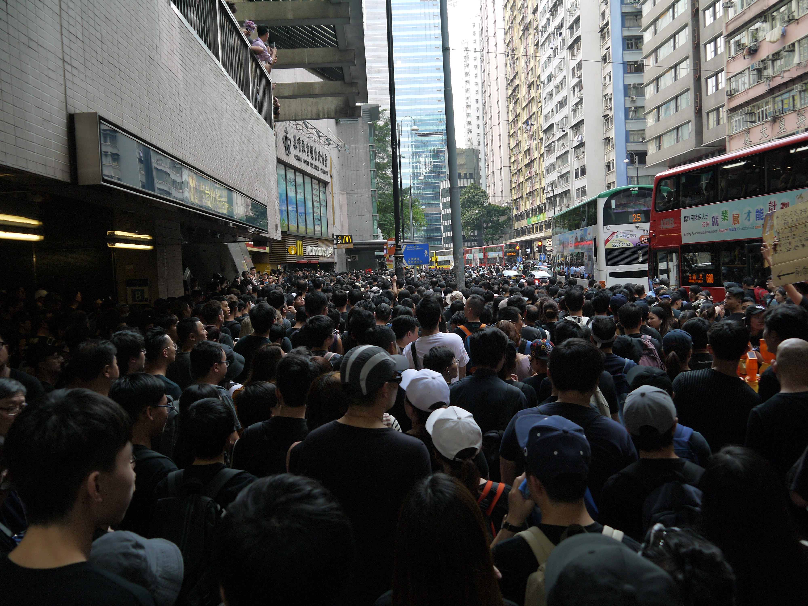
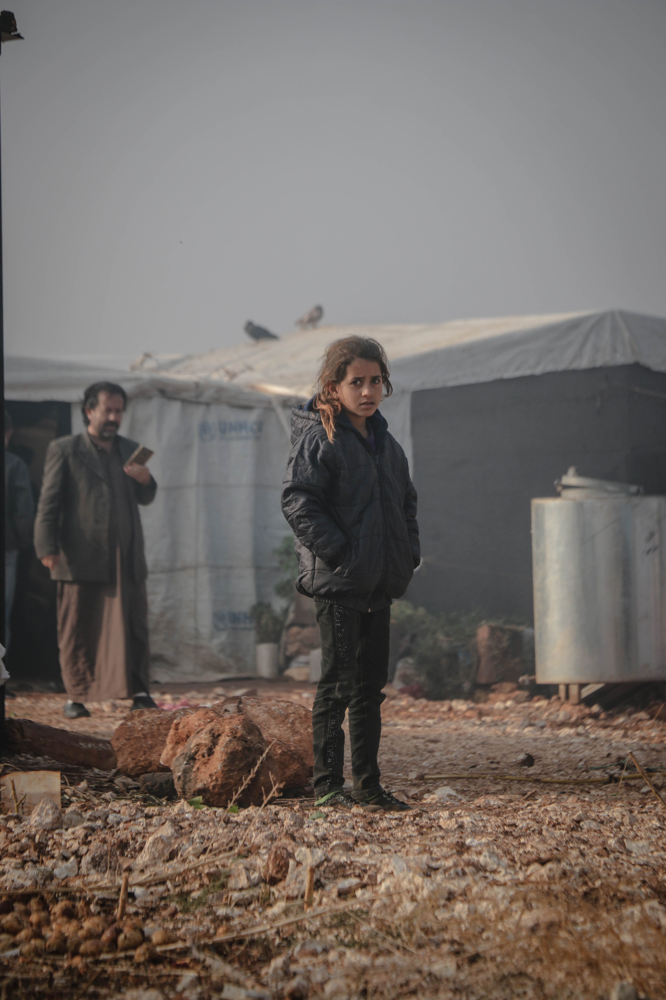

In 1950, five years after the founding of the United Nations, world population was estimated at around 2.6 billion people. It reached 5 billion in 1987 and 6 billion in 1999. In October 2011, the global population was estimated to be 7 billion. A global movement 7 Billion Actions was launched to mark this milestone. The world’s population is expected to increase by 2 billion persons in the next 30 years, from 7.7 billion currently to 9.7 billion in 2050 and could peak at nearly 11 billion around 2100. This dramatic growth has been driven largely by increasing numbers of people surviving to reproductive age, and has been accompanied by major changes in fertility rates, increasing urbanization and accelerating migration. These trends will have far-reaching implications for generations to come.
Sixty-one per cent of the global population lives in Asia (4.7 billion), 17 per cent in Africa (1.3 billion), 10 per cent in Europe (750 million), 8 per cent in Latin America and the Caribbean (650 million), and the remaining 5 per cent in Northern America (370 million) and Oceania (43 million). China (1.44 billion) and India (1.39 billion) remain the two most populous countries of the world, both with more than 1 billion people, representing 19 and 18 per cent of the world’s population, respectively. Around 2027, India is projected to overtake China as the world’s most populous country, while China’s population is projected to decrease by 31.4 million, or around 2.2 per cent, between 2019 and 2050. (Source: World Population Prospects 2019)
Overall, significant gains in life expectancy have been achieved in recent years. Globally, life expectancy at birth is expected to rise from 72.6 years in 2019 to 77.1 years in 2050. While considerable progress has been made in closing the longevity differential between countries, large gaps remain. In 2019, life expectancy at birth in the least developed countries lags 7.4 years behind the global average, due largely to persistently high levels of child and maternal mortality, as well as violence, conflict and the continuing impact of the HIV epidemic.
International migration is a much smaller component of population change than births or deaths. However, in some countries and areas the impact of migration on population size is significant, namely in countries that send or receive large numbers of economic migrants and those affected by refugee flows. Between 2010 and 2020, fourteen countries or areas will see a net inflow of more than one million migrants, while ten countries will see a net outflow of similar magnitude.